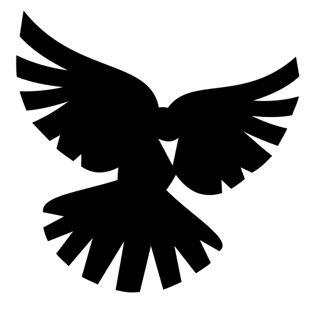

Structuring a page of content
Responsive soon...
Bird Watching
14 November 2023
19:25 - 20:20
Birdwatching
Welcome
Welcome to our fake birdwatching site. If this were a real site, it would be the ideal place to come to learn more about birdwatching, whether you are a beginner looking to learn how to get into birding, or an expert wanting to share ideas, tips, and photos with other like-minded people.
So don't waste time! Get what you need, then turn off that computer and get out into the great outdoors!